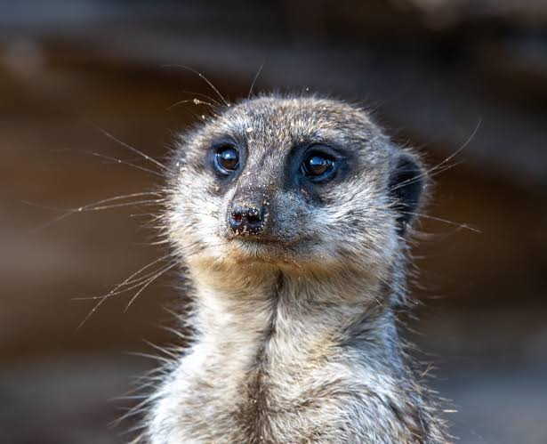

Сурикат— хижий ссавець з родини мангустових, розміром схожий на білку. Живуть вони в пустелях Південної Африки групами різного розміру, від трьох до 50 осіб. У зграї майже однакова кількість самців і самок. На відміну від інших видів мангустів, сурікати населяють більше відкриті місця (без дерев).
